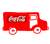
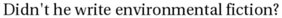
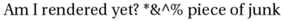
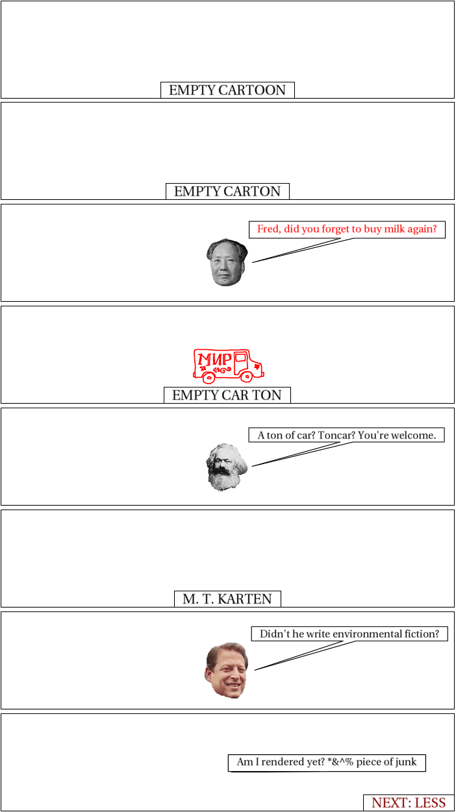

interpret_script.pl runs:
Script specification
panels 8 panel 1 caption (bottom middle) EMPTY CARTOON panel 2 caption (bottom middle) EMPTY CARTON panel 3 font size=12 color=255,0,0 mao appears mao says Fred, did you forget to buy milk again? mao leaves font clear panel 4 commiemobile appears caption (bottom middle) EMPTY CAR TON commiemobile leaves panel 5 color=255,0,0 font size=12 marx appears marx says A ton of car? Toncar? You're welcome. marx leaves font clear panel 6 caption (bottom middle) M. T. KARTEN panel 7 font size=12 color=124,252,0 al says Didn't he write environmental fiction? al leaves font clear panel 8 font size=12 dot says Am I rendered yet? *&^% piece of junk caption (lower right, size=16, color=128,0,0) NEXT: LESS
Interpretation follows:
panels 8
Panel parameters and layout (currently ignored)
panel 1
Panel - (parameters currently ignored)
caption (bottom middle) EMPTY CARTOON
Caption with arguments bottom middle, saying "EMPTY CARTOON".
panel 2
Panel - (parameters currently ignored)
caption (bottom middle) EMPTY CARTON
Caption with arguments bottom middle, saying "EMPTY CARTON".
panel 3
Panel - (parameters currently ignored)
font size=12 color=255,0,0
Font size is now 12.
Font color is now 255,0,0.
Font is still default
mao appears
Character mao appears on scene
mao says Fred, did you forget to buy milk again?
Character "mao", already on panel, speaks!
Speaker says: "Fred, did you forget to buy milk again?"
mao leaves
Character mao leaves scene
font clear
Font is now default.
panel 4
Panel - (parameters currently ignored)
commiemobile appears
Character commiemobile appears on scene
caption (bottom middle) EMPTY CAR TON
Caption with arguments bottom middle, saying "EMPTY CAR TON".
commiemobile leaves
Character commiemobile leaves scene
panel 5
Panel - (parameters currently ignored)
color=255,0,0
I have no idea what this means.
font size=12
Font size is now 12.
Font is still default
marx appears
Character marx appears on scene
marx says A ton of car? Toncar? You're welcome.
Character "marx", already on panel, speaks!
Speaker says: "A ton of car? Toncar? You're welcome."
marx leaves
Character marx leaves scene
font clear
Font is now default.
panel 6
Panel - (parameters currently ignored)
caption (bottom middle) M. T. KARTEN
Caption with arguments bottom middle, saying "M. T. KARTEN".
panel 7
Panel - (parameters currently ignored)
font size=12
Font size is now 12.
Font is still default
color=124,252,0
I have no idea what this means.
al says Didn't he write environmental fiction?
Speech implies presence: speaker is "al".
Speaker says: "Didn't he write environmental fiction?"
al leaves
Character al leaves scene
font clear
Font is now default.
panel 8
Panel - (parameters currently ignored)
font size=12
Font size is now 12.
Font is still default
dot says Am I rendered yet? *&^% piece of junk
Speech implies presence: speaker is "dot".
Speaker says: "Am I rendered yet? *&^% piece of junk"
caption (lower right, size=16, color=128,0,0) NEXT: LESS
Caption with arguments lower right, size=16, color=128,0,0, saying "NEXT: LESS".
I have no idea what this means.
Resulting XML definition:
<cartoon rowformat="1" width="700" panel-h="150" character-base-url="http://www.vivtek.com/toonbots/characters/"> <panel> <caption location="bottom middle">EMPTY CARTOON</caption> </panel> <panel> <caption location="bottom middle">EMPTY CARTON</caption> </panel> <panel> <character name="mao" action="leaves"/> <dialog who="mao" font-size="12" font-color="255,0,0">Fred, did you forget to buy milk again?</dialog> </panel> <panel> <character name="commiemobile" action="leaves"/> <caption location="bottom middle">EMPTY CAR TON</caption> </panel> <panel> <character name="marx" action="leaves"/> <dialog who="marx" font-size="12">A ton of car? Toncar? You're welcome.</dialog> </panel> <panel> <caption location="bottom middle">M. T. KARTEN</caption> </panel> <panel> <character name="al" action="leaves"/> <dialog who="al" font-size="12">Didn't he write environmental fiction?</dialog> </panel> <panel> <character name="dot"/> <dialog who="dot" font-size="12">Am I rendered yet? *&^% piece of junk</dialog> <caption font-size="16," font-color="128,0,0" location="lower right">NEXT: LESS</caption> </panel> </cartoon>
instantiate.pl runs, but doesn't really do anything yet.
build_panel_make.pl runs.
Scene default:
<scene id="default" panels="1-2-3-4-5-6-7-8"> <frame tag="default-1" id="1" panels="3"> <character name="mao" action="leaves" tag="default-1"/> </frame> <frame tag="default-2" id="2" panels="4"> <character name="commiemobile" action="leaves" tag="default-2"/> </frame> <frame tag="default-3" id="3" panels="5"> <character name="marx" action="leaves" tag="default-3"/> </frame> <frame tag="default-4" id="4" panels="6"/> <frame tag="default-5" id="5" panels="7"> <character name="al" action="leaves" tag="default-5"/> </frame> <frame tag="default-6" id="6" panels="8"> <character name="dot" tag="default-6"/> </frame> </scene>
Panel Makefile is as follows:
# Panel Makefile generated Fri Jul 4 16:03:34 PDT 2008 by Toon-o-Matic t2 # Contains no serviceable parts. Batteries not included. # Void in NH, VT, and U.S. Minor Outlying Islands. all: panel-1.svg panel-2.svg panel-3.svg panel-4.svg panel-5.svg panel-6.svg panel-7.svg panel-8.svg panel-1.svg: caption-1-1.svg perl build_panel_g.pl panel-1.xml 1 1 > panel-1-g.svg perl merge_svg.pl "panel 1" panel-1-g.svg caption-1-1.svg > panel-1.svg placement-panel-1.xml: perl place_characters.pl "panel 1" 698 150 > placement-panel-1.xml panel-2.svg: caption-2-1.svg perl build_panel_g.pl panel-2.xml 1 157 > panel-2-g.svg perl merge_svg.pl "panel 2" panel-2-g.svg caption-2-1.svg > panel-2.svg placement-panel-2.xml: perl place_characters.pl "panel 2" 698 150 > placement-panel-2.xml panel-3.svg: character-mao-default-1-3.svg dialog-3-1.svg perl build_panel_g.pl panel-3.xml 1 314 > panel-3-g.svg perl merge_svg.pl "panel 3" panel-3-g.svg character-mao-default-1-3.svg dialog-3-1.svg > panel-3.svg placement-panel-3.xml: draw-character-mao-default-1.xml perl place_characters.pl "panel 3" 698 150 draw-character-mao-default-1.xml > placement-panel-3.xml panel-4.svg: character-commiemobile-default-2-4.svg caption-4-1.svg perl build_panel_g.pl panel-4.xml 1 471 > panel-4-g.svg perl merge_svg.pl "panel 4" panel-4-g.svg character-commiemobile-default-2-4.svg caption-4-1.svg > panel-4.svg placement-panel-4.xml: draw-character-commiemobile-default-2.xml perl place_characters.pl "panel 4" 698 150 draw-character-commiemobile-default-2.xml > placement-panel-4.xml panel-5.svg: character-marx-default-3-5.svg dialog-5-2.svg perl build_panel_g.pl panel-5.xml 1 628 > panel-5-g.svg perl merge_svg.pl "panel 5" panel-5-g.svg character-marx-default-3-5.svg dialog-5-2.svg > panel-5.svg placement-panel-5.xml: draw-character-marx-default-3.xml perl place_characters.pl "panel 5" 698 150 draw-character-marx-default-3.xml > placement-panel-5.xml panel-6.svg: caption-6-1.svg perl build_panel_g.pl panel-6.xml 1 785 > panel-6-g.svg perl merge_svg.pl "panel 6" panel-6-g.svg caption-6-1.svg > panel-6.svg placement-panel-6.xml: perl place_characters.pl "panel 6" 698 150 > placement-panel-6.xml panel-7.svg: character-al-default-5-7.svg dialog-7-3.svg perl build_panel_g.pl panel-7.xml 1 942 > panel-7-g.svg perl merge_svg.pl "panel 7" panel-7-g.svg character-al-default-5-7.svg dialog-7-3.svg > panel-7.svg placement-panel-7.xml: draw-character-al-default-5.xml perl place_characters.pl "panel 7" 698 150 draw-character-al-default-5.xml > placement-panel-7.xml panel-8.svg: character-dot-default-6-8.svg dialog-8-4.svg caption-8-1.svg perl build_panel_g.pl panel-8.xml 1 1099 > panel-8-g.svg perl merge_svg.pl "panel 8" panel-8-g.svg character-dot-default-6-8.svg dialog-8-4.svg caption-8-1.svg > panel-8.svg placement-panel-8.xml: draw-character-dot-default-6.xml perl place_characters.pl "panel 8" 698 150 draw-character-dot-default-6.xml > placement-panel-8.xml caption-4-1.info: caption-4-1.xml perl render_text.pl caption-4-1.xml caption-4-1.png identify -format '<graphic size="%b" height="%h" width="%w" geometry="%g" file="%f"/>' caption-4-1.png > caption-4-1.info caption-4-1.svg: caption-4-1.info perl draw_caption.pl caption-4-1.xml caption-4-1.info 698 150 0 caption-4-1.png > caption-4-1.svg caption-1-1.info: caption-1-1.xml perl render_text.pl caption-1-1.xml caption-1-1.png identify -format '<graphic size="%b" height="%h" width="%w" geometry="%g" file="%f"/>' caption-1-1.png > caption-1-1.info caption-1-1.svg: caption-1-1.info perl draw_caption.pl caption-1-1.xml caption-1-1.info 698 150 0 caption-1-1.png > caption-1-1.svg draw-character-al-default-5.xml: character-al-default-5.xml perl build_character.pl this 698 150 character-al-default-5.xml > draw-character-al-default-5.xml character-al-default-5-7.svg: draw-character-al-default-5.xml placement-panel-7.xml perl draw.pl draw-character-al-default-5.xml 698 150 placement-panel-7.xml > character-al-default-5-7.svg caption-2-1.info: caption-2-1.xml perl render_text.pl caption-2-1.xml caption-2-1.png identify -format '<graphic size="%b" height="%h" width="%w" geometry="%g" file="%f"/>' caption-2-1.png > caption-2-1.info caption-2-1.svg: caption-2-1.info perl draw_caption.pl caption-2-1.xml caption-2-1.info 698 150 0 caption-2-1.png > caption-2-1.svg dialog-3-1.info: dialog-3-1.xml character-mao-default-1-3.svg perl render_text.pl dialog-3-1.xml dialog-3-1.png identify -format '<graphic size="%b" height="%h" width="%w" geometry="%g" file="%f"/>' dialog-3-1.png > dialog-3-1.info dialog-3-1.svg: dialog-3-1.info perl draw_caption.pl dialog-3-1.xml dialog-3-1.info 698 150 0 dialog-3-1.png > dialog-3-1.svg dialog-8-4.info: dialog-8-4.xml character-dot-default-6-8.svg perl render_text.pl dialog-8-4.xml dialog-8-4.png identify -format '<graphic size="%b" height="%h" width="%w" geometry="%g" file="%f"/>' dialog-8-4.png > dialog-8-4.info dialog-8-4.svg: dialog-8-4.info perl draw_caption.pl dialog-8-4.xml dialog-8-4.info 698 150 0 dialog-8-4.png > dialog-8-4.svg draw-character-marx-default-3.xml: character-marx-default-3.xml perl build_character.pl this 698 150 character-marx-default-3.xml > draw-character-marx-default-3.xml character-marx-default-3-5.svg: draw-character-marx-default-3.xml placement-panel-5.xml perl draw.pl draw-character-marx-default-3.xml 698 150 placement-panel-5.xml > character-marx-default-3-5.svg caption-8-1.info: caption-8-1.xml perl render_text.pl caption-8-1.xml caption-8-1.png identify -format '<graphic size="%b" height="%h" width="%w" geometry="%g" file="%f"/>' caption-8-1.png > caption-8-1.info caption-8-1.svg: caption-8-1.info perl draw_caption.pl caption-8-1.xml caption-8-1.info 698 150 0 caption-8-1.png > caption-8-1.svg dialog-5-2.info: dialog-5-2.xml character-marx-default-3-5.svg perl render_text.pl dialog-5-2.xml dialog-5-2.png identify -format '<graphic size="%b" height="%h" width="%w" geometry="%g" file="%f"/>' dialog-5-2.png > dialog-5-2.info dialog-5-2.svg: dialog-5-2.info perl draw_caption.pl dialog-5-2.xml dialog-5-2.info 698 150 0 dialog-5-2.png > dialog-5-2.svg caption-6-1.info: caption-6-1.xml perl render_text.pl caption-6-1.xml caption-6-1.png identify -format '<graphic size="%b" height="%h" width="%w" geometry="%g" file="%f"/>' caption-6-1.png > caption-6-1.info caption-6-1.svg: caption-6-1.info perl draw_caption.pl caption-6-1.xml caption-6-1.info 698 150 0 caption-6-1.png > caption-6-1.svg draw-character-dot-default-6.xml: character-dot-default-6.xml perl build_character.pl this 698 150 character-dot-default-6.xml > draw-character-dot-default-6.xml character-dot-default-6-8.svg: draw-character-dot-default-6.xml placement-panel-8.xml perl draw.pl draw-character-dot-default-6.xml 698 150 placement-panel-8.xml > character-dot-default-6-8.svg dialog-7-3.info: dialog-7-3.xml character-al-default-5-7.svg perl render_text.pl dialog-7-3.xml dialog-7-3.png identify -format '<graphic size="%b" height="%h" width="%w" geometry="%g" file="%f"/>' dialog-7-3.png > dialog-7-3.info dialog-7-3.svg: dialog-7-3.info perl draw_caption.pl dialog-7-3.xml dialog-7-3.info 698 150 0 dialog-7-3.png > dialog-7-3.svg draw-character-mao-default-1.xml: character-mao-default-1.xml perl build_character.pl this 698 150 character-mao-default-1.xml > draw-character-mao-default-1.xml character-mao-default-1-3.svg: draw-character-mao-default-1.xml placement-panel-3.xml perl draw.pl draw-character-mao-default-1.xml 698 150 placement-panel-3.xml > character-mao-default-1-3.svg draw-character-commiemobile-default-2.xml: character-commiemobile-default-2.xml perl build_character.pl this 698 150 character-commiemobile-default-2.xml > draw-character-commiemobile-default-2.xml character-commiemobile-default-2-4.svg: draw-character-commiemobile-default-2.xml placement-panel-4.xml perl draw.pl draw-character-commiemobile-default-2.xml 698 150 placement-panel-4.xml > character-commiemobile-default-2-4.svgrender_text.pl renders "caption-1-1.xml":
<caption location="bottom middle">EMPTY CARTOON</caption>

draw_caption.pl runs:
Graphics info:
<graphic width="186" file="caption-1-1.png" geometry="2500x320+21+6" height="21" size="14499"/>
<g transform="translate(246,125)" x="246" y="125" w="206" h="25"> <rect x="0" y="0" width="206" height="25" style="stroke:black; stroke-width:1; fill:white"/> <image x="10" y="2" width="186" height="21" xlink:href="caption-1-1.png"/> </g>
build_panel_g.pl runs, producing:
<g transform="translate(1,1)"/>
merge_svg.pl runs to produce panel 1:
<g transform="translate(1,1)"><g w="206" y="125" h="25" transform="translate(246,125)" x="246"> <rect width="206" y="0" style="stroke:black; stroke-width:1; fill:white" x="0" height="25"/> <image width="186" y="2" xlink:href="caption-1-1.png" x="10" height="21"/> </g> </g>
render_text.pl renders "caption-2-1.xml":
<caption location="bottom middle">EMPTY CARTON</caption>
draw_caption.pl runs:
Graphics info:
<graphic width="170" file="caption-2-1.png" geometry="2500x320+21+6" height="21" size="13443"/>
<g transform="translate(254,125)" x="254" y="125" w="190" h="25"> <rect x="0" y="0" width="190" height="25" style="stroke:black; stroke-width:1; fill:white"/> <image x="10" y="2" width="170" height="21" xlink:href="caption-2-1.png"/> </g>
build_panel_g.pl runs, producing:
<g transform="translate(1,157)"/>
merge_svg.pl runs to produce panel 2:
<g transform="translate(1,157)"><g w="190" y="125" h="25" transform="translate(254,125)" x="254"> <rect width="190" y="0" style="stroke:black; stroke-width:1; fill:white" x="0" height="25"/> <image width="170" y="2" xlink:href="caption-2-1.png" x="10" height="21"/> </g> </g>
build_character.pl runs on character-mao-default-1.xml:
<character action="leaves" name="mao" tag="default-1"/>Retrieving character definition for mao; URL is http://www.vivtek.com/toonbots/characters/mao.xml
Retrieving image from http://www.vivtek.com/toonbots/characters/mao.bmp

Final character definition:
<character name="mao" label="Chairman Mao" rel-h="50"> <draw face="left" file="image-mao-1.bmp" type="image"/> </character>
Built character:
<character action="leaves" name="mao" tag="default-1" rel-h="50" rel-w="" height="75" width="66.2068965517241"> <draw face="left" file="image-mao-1.bmp" type="image" rel-h="100" rel-w="100" height="75" rel-x="0" rel-y="0" w="128" h="145" width="66.2068965517241"/> </character>
place_characters.pl places characters for panel 3:
<placement> <character name="mao" x="315.896551724138" y="52.5"/> </placement>
draw.pl runs on draw-character-mao-default-1.xml:
SVG built:
<g x="315.896551724138" y="52.5" w="66.2068965517241" h="75"> <image x="315.896551724138" y="52.5" width="66.2068965517241" height="75" xlink:href="image-mao-1.bmp"/> </g>
render_text.pl renders "dialog-3-1.xml":
<dialog who="mao" ref-who="character-mao-default-1-3.svg" font-color="255,0,0" font-size="12">Fred, did you forget to buy milk again?</dialog>
draw_caption.pl runs:
Graphics info:
<graphic width="282" file="dialog-3-1.png" geometry="2500x320+15+3" height="22" size="14218"/>
<g> <polyline style="stroke:black; stroke-width:1; fill:white" points="382.103448275862,26.5 684.103448275862,26.5 684.103448275862,52.5 543.103448275862,52.5 387.103448275862,90 523.103448275862,52.5 382.103448275862,52.5 382.103448275862,26.5"/> <image x="10" y="2" width="282" height="22" xlink:href="dialog-3-1.png" transform="translate(382.103448275862,26.5)"/> </g>
build_panel_g.pl runs, producing:
<g transform="translate(1,314)"/>
merge_svg.pl runs to produce panel 3:
<g transform="translate(1,314)"><g w="66.2068965517241" y="52.5" h="75" x="315.896551724138"> <image width="66.2068965517241" y="52.5" xlink:href="image-mao-1.bmp" x="315.896551724138" height="75"/> </g> <g> <polyline points="382.103448275862,26.5 684.103448275862,26.5 684.103448275862,52.5 543.103448275862,52.5 387.103448275862,90 523.103448275862,52.5 382.103448275862,52.5 382.103448275862,26.5" style="stroke:black; stroke-width:1; fill:white"/> <image width="282" y="2" transform="translate(382.103448275862,26.5)" xlink:href="dialog-3-1.png" x="10" height="22"/> </g> </g>
build_character.pl runs on character-commiemobile-default-2.xml:
<character action="leaves" name="commiemobile" tag="default-2"/>Retrieving character definition for commiemobile; URL is http://www.vivtek.com/toonbots/characters/commiemobile.xml
Retrieving image from http://www.vivtek.com/toonbots/characters/commiemobile.bmp
Retrieving image from http://www.vivtek.com/toonbots/characters/commiemobile2.bmp

Final character definition:
<character name="commiemobile" label="Commie-mobile" rel-h="70"> <variant> <aspect name="normal"><draw face="right" file="image-commiemobile-1.bmp" type="image"/></aspect> <aspect name="coke"><draw face="right" file="image-commiemobile-2.bmp" type="image"/></aspect> </variant> </character>
Instantiating variant ().
Built character:
<character action="leaves" name="commiemobile" tag="default-2" rel-h="70" rel-w="" height="105" width="118.730769230769"> <draw face="right" file="image-commiemobile-1.bmp" type="image" rel-h="100" rel-w="100" height="105" rel-x="0" rel-y="0" w="294" h="260" width="118.730769230769"/> </character>
place_characters.pl places characters for panel 4:
<placement> <character name="commiemobile" x="289.634615384615" y="37.5"/> </placement>
draw.pl runs on draw-character-commiemobile-default-2.xml:
SVG built:
<g x="289.634615384615" y="37.5" w="118.730769230769" h="105"> <image x="289.634615384615" y="37.5" width="118.730769230769" height="105" xlink:href="image-commiemobile-1.bmp"/> </g>
render_text.pl renders "caption-4-1.xml":
<caption location="bottom middle">EMPTY CAR TON</caption>
draw_caption.pl runs:
Graphics info:
<graphic width="175" file="caption-4-1.png" geometry="2500x320+21+6" height="21" size="13566"/>
<g transform="translate(251,125)" x="251" y="125" w="195" h="25"> <rect x="0" y="0" width="195" height="25" style="stroke:black; stroke-width:1; fill:white"/> <image x="10" y="2" width="175" height="21" xlink:href="caption-4-1.png"/> </g>
build_panel_g.pl runs, producing:
<g transform="translate(1,471)"/>
merge_svg.pl runs to produce panel 4:
<g transform="translate(1,471)"><g w="118.730769230769" y="37.5" h="105" x="289.634615384615"> <image width="118.730769230769" y="37.5" xlink:href="image-commiemobile-1.bmp" x="289.634615384615" height="105"/> </g> <g w="195" y="125" h="25" transform="translate(251,125)" x="251"> <rect width="195" y="0" style="stroke:black; stroke-width:1; fill:white" x="0" height="25"/> <image width="175" y="2" xlink:href="caption-4-1.png" x="10" height="21"/> </g> </g>
build_character.pl runs on character-marx-default-3.xml:
<character action="leaves" name="marx" tag="default-3"/>Retrieving character definition for marx; URL is http://www.vivtek.com/toonbots/characters/marx.xml
Retrieving image from http://www.vivtek.com/toonbots/characters/marx.bmp
Final character definition:
<character name="marx" label="Karl Marx" rel-h="50"> <draw file="image-marx-1.bmp" type="image"/> </character>
Built character:
<character action="leaves" name="marx" tag="default-3" rel-h="50" rel-w="" height="75" width="65.0943396226415"> <draw file="image-marx-1.bmp" type="image" rel-h="100" rel-w="100" height="75" rel-x="0" rel-y="0" w="138" h="159" width="65.0943396226415"/> </character>
place_characters.pl places characters for panel 5:
<placement> <character name="marx" x="316.452830188679" y="52.5"/> </placement>
draw.pl runs on draw-character-marx-default-3.xml:
SVG built:
<g x="316.452830188679" y="52.5" w="65.0943396226415" h="75"> <image x="316.452830188679" y="52.5" width="65.0943396226415" height="75" xlink:href="image-marx-1.bmp"/> </g>
render_text.pl renders "dialog-5-2.xml":
<dialog who="marx" ref-who="character-marx-default-3-5.svg" font-size="12">A ton of car? Toncar? You're welcome.</dialog>

draw_caption.pl runs:
Graphics info:
<graphic width="281" file="dialog-5-2.png" geometry="2500x320+14+3" height="18" size="15941"/>
<g> <polyline style="stroke:black; stroke-width:1; fill:white" points="381.54716981132,30.5 682.54716981132,30.5 682.54716981132,52.5 542.04716981132,52.5 386.54716981132,90 522.04716981132,52.5 381.54716981132,52.5 381.54716981132,30.5"/> <image x="10" y="2" width="281" height="18" xlink:href="dialog-5-2.png" transform="translate(381.54716981132,30.5)"/> </g>
build_panel_g.pl runs, producing:
<g transform="translate(1,628)"/>
merge_svg.pl runs to produce panel 5:
<g transform="translate(1,628)"><g w="65.0943396226415" y="52.5" h="75" x="316.452830188679"> <image width="65.0943396226415" y="52.5" xlink:href="image-marx-1.bmp" x="316.452830188679" height="75"/> </g> <g> <polyline points="381.54716981132,30.5 682.54716981132,30.5 682.54716981132,52.5 542.04716981132,52.5 386.54716981132,90 522.04716981132,52.5 381.54716981132,52.5 381.54716981132,30.5" style="stroke:black; stroke-width:1; fill:white"/> <image width="281" y="2" transform="translate(381.54716981132,30.5)" xlink:href="dialog-5-2.png" x="10" height="18"/> </g> </g>
render_text.pl renders "caption-6-1.xml":
<caption location="bottom middle">M. T. KARTEN</caption>
draw_caption.pl runs:
Graphics info:
<graphic width="144" file="caption-6-1.png" geometry="2500x320+21+6" height="21" size="10210"/>
<g transform="translate(267,125)" x="267" y="125" w="164" h="25"> <rect x="0" y="0" width="164" height="25" style="stroke:black; stroke-width:1; fill:white"/> <image x="10" y="2" width="144" height="21" xlink:href="caption-6-1.png"/> </g>
build_panel_g.pl runs, producing:
<g transform="translate(1,785)"/>
merge_svg.pl runs to produce panel 6:
<g transform="translate(1,785)"><g w="164" y="125" h="25" transform="translate(267,125)" x="267"> <rect width="164" y="0" style="stroke:black; stroke-width:1; fill:white" x="0" height="25"/> <image width="144" y="2" xlink:href="caption-6-1.png" x="10" height="21"/> </g> </g>
build_character.pl runs on character-al-default-5.xml:
<character action="leaves" name="al" tag="default-5"/>Retrieving character definition for al; URL is http://www.vivtek.com/toonbots/characters/al.xml
Retrieving image from http://www.vivtek.com/toonbots/characters/gore1.bmp
Retrieving image from http://www.vivtek.com/toonbots/characters/gore2.bmp
Final character definition:
<character name="al" label="Al Gore" rel-h="60"> <variant> <aspect name="1"><draw face="left" file="image-al-1.bmp" type="image"/></aspect> <aspect name="2"><draw face="right" file="image-al-2.bmp" type="image"/></aspect> </variant> </character>
Instantiating variant ().
Built character:
<character action="leaves" name="al" tag="default-5" rel-h="60" rel-w="" height="90" width="73.2558139534884"> <draw face="left" file="image-al-1.bmp" type="image" rel-h="100" rel-w="100" height="90" rel-x="0" rel-y="0" w="70" h="86" width="73.2558139534884"/> </character>
place_characters.pl places characters for panel 7:
<placement> <character name="al" x="312.372093023256" y="45"/> </placement>
draw.pl runs on draw-character-al-default-5.xml:
SVG built:
<g x="312.372093023256" y="45" w="73.2558139534884" h="90"> <image x="312.372093023256" y="45" width="73.2558139534884" height="90" xlink:href="image-al-1.bmp"/> </g>
render_text.pl renders "dialog-7-3.xml":
<dialog who="al" ref-who="character-al-default-5-7.svg" font-size="12">Didn't he write environmental fiction?</dialog>
draw_caption.pl runs:
Graphics info:
<graphic width="282" file="dialog-7-3.png" geometry="2500x320+15+3" height="18" size="15276"/>
<g> <polyline style="stroke:black; stroke-width:1; fill:white" points="385.627906976744,23 687.627906976744,23 687.627906976744,45 546.627906976744,45 390.627906976744,90 526.627906976744,45 385.627906976744,45 385.627906976744,23"/> <image x="10" y="2" width="282" height="18" xlink:href="dialog-7-3.png" transform="translate(385.627906976744,23)"/> </g>
build_panel_g.pl runs, producing:
<g transform="translate(1,942)"/>
merge_svg.pl runs to produce panel 7:
<g transform="translate(1,942)"><g w="73.2558139534884" y="45" h="90" x="312.372093023256"> <image width="73.2558139534884" y="45" xlink:href="image-al-1.bmp" x="312.372093023256" height="90"/> </g> <g> <polyline points="385.627906976744,23 687.627906976744,23 687.627906976744,45 546.627906976744,45 390.627906976744,90 526.627906976744,45 385.627906976744,45 385.627906976744,23" style="stroke:black; stroke-width:1; fill:white"/> <image width="282" y="2" transform="translate(385.627906976744,23)" xlink:href="dialog-7-3.png" x="10" height="18"/> </g> </g>
build_character.pl runs on character-dot-default-6.xml:
<character name="dot" tag="default-6"/>Retrieving character definition for dot; URL is http://www.vivtek.com/toonbots/characters/dot.xml
Final character definition:
<character rel-w="100" name="dot" label="Dot" rel-h="1"> <draw fill="black" type="circle"/> </character>
Built character:
<character name="dot" tag="default-6" rel-h="1" rel-w="100" height="1.5" width="1.5"> <draw fill="black" type="circle" rel-h="100" rel-w="100" height="1.5" width="1.5"/> </character>
place_characters.pl places characters for panel 8:
<placement> <character name="dot" x="348.25" y="89.25"/> </placement>
draw.pl runs on draw-character-dot-default-6.xml:
SVG built:
<g x="348.25" y="89.25" w="1.5" h="1.5"> <circle cx="349" cy="90" r="" style="stroke:black; stroke-width:1; fill:none"/> </g>
render_text.pl renders "dialog-8-4.xml":
<dialog who="dot" ref-who="character-dot-default-6-8.svg" font-size="12">Am I rendered yet? *&^% piece of junk</dialog>
draw_caption.pl runs:
Graphics info:
<graphic width="284" file="dialog-8-4.png" geometry="2500x320+14+3" height="22" size="17488"/>
<g> <polyline style="stroke:black; stroke-width:1; fill:white" points="349.75,63.25 653.75,63.25 653.75,89.25 511.75,89.25 354.75,90 491.75,89.25 349.75,89.25 349.75,63.25"/> <image x="10" y="2" width="284" height="22" xlink:href="dialog-8-4.png" transform="translate(349.75,63.25)"/> </g>
render_text.pl renders "caption-8-1.xml":
<caption location="lower right" font-color="128,0,0" font-size="16,">NEXT: LESS</caption>
draw_caption.pl runs:
Graphics info:
<graphic width="120" file="caption-8-1.png" geometry="2500x320+21+6" height="21" size="9806"/>
<g transform="translate(558,125)" x="558" y="125" w="140" h="25"> <rect x="0" y="0" width="140" height="25" style="stroke:black; stroke-width:1; fill:white"/> <image x="10" y="2" width="120" height="21" xlink:href="caption-8-1.png"/> </g>
build_panel_g.pl runs, producing:
<g transform="translate(1,1099)"/>
merge_svg.pl runs to produce panel 8:
<g transform="translate(1,1099)"><g w="1.5" y="89.25" h="1.5" x="348.25"> <circle cx="349" r="" style="stroke:black; stroke-width:1; fill:none" cy="90"/> </g> <g> <polyline points="349.75,63.25 653.75,63.25 653.75,89.25 511.75,89.25 354.75,90 491.75,89.25 349.75,89.25 349.75,63.25" style="stroke:black; stroke-width:1; fill:white"/> <image width="284" y="2" transform="translate(349.75,63.25)" xlink:href="dialog-8-4.png" x="10" height="22"/> </g> <g w="140" y="125" h="25" transform="translate(558,125)" x="558"> <rect width="140" y="0" style="stroke:black; stroke-width:1; fill:white" x="0" height="25"/> <image width="120" y="2" xlink:href="caption-8-1.png" x="10" height="21"/> </g> </g>
draw_panels.pl runs:
<svg height="1251" width="702"> <rect height="1251" width="700" style="fill: white"/> <polyline transform="" style="fill:none; stroke:black; stroke-width:1" arrow="" points="1,785 699,785 699,935 1,935 1,785"/> <polyline transform="" style="fill:none; stroke:black; stroke-width:1" arrow="" points="1,314 699,314 699,464 1,464 1,314"/> <polyline transform="" style="fill:none; stroke:black; stroke-width:1" arrow="" points="1,942 699,942 699,1092 1,1092 1,942"/> <polyline transform="" style="fill:none; stroke:black; stroke-width:1" arrow="" points="1,157 699,157 699,307 1,307 1,157"/> <polyline transform="" style="fill:none; stroke:black; stroke-width:1" arrow="" points="1,1099 699,1099 699,1249 1,1249 1,1099"/> <polyline transform="" style="fill:none; stroke:black; stroke-width:1" arrow="" points="1,1 699,1 699,151 1,151 1,1"/> <polyline transform="" style="fill:none; stroke:black; stroke-width:1" arrow="" points="1,471 699,471 699,621 1,621 1,471"/> <polyline transform="" style="fill:none; stroke:black; stroke-width:1" arrow="" points="1,628 699,628 699,778 1,778 1,628"/> </svg>
merge_svg.pl runs to produce the final cartoon:
<svg width="702" height="1251"> <rect width="700" style="fill: white" height="1251"/> <polyline transform="" points="1,785 699,785 699,935 1,935 1,785" style="fill:none; stroke:black; stroke-width:1" arrow=""/> <polyline transform="" points="1,314 699,314 699,464 1,464 1,314" style="fill:none; stroke:black; stroke-width:1" arrow=""/> <polyline transform="" points="1,942 699,942 699,1092 1,1092 1,942" style="fill:none; stroke:black; stroke-width:1" arrow=""/> <polyline transform="" points="1,157 699,157 699,307 1,307 1,157" style="fill:none; stroke:black; stroke-width:1" arrow=""/> <polyline transform="" points="1,1099 699,1099 699,1249 1,1249 1,1099" style="fill:none; stroke:black; stroke-width:1" arrow=""/> <polyline transform="" points="1,1 699,1 699,151 1,151 1,1" style="fill:none; stroke:black; stroke-width:1" arrow=""/> <polyline transform="" points="1,471 699,471 699,621 1,621 1,471" style="fill:none; stroke:black; stroke-width:1" arrow=""/> <polyline transform="" points="1,628 699,628 699,778 1,778 1,628" style="fill:none; stroke:black; stroke-width:1" arrow=""/> <g transform="translate(1,1)"/> <g transform="translate(1,1)"><g y="125" w="206" transform="translate(246,125)" h="25" x="246"> <rect y="0" width="206" style="stroke:black; stroke-width:1; fill:white" x="0" height="25"/> <image y="2" width="186" xlink:href="caption-1-1.png" x="10" height="21"/> </g> </g> <g transform="translate(1,157)"/> <g transform="translate(1,157)"><g y="125" w="190" transform="translate(254,125)" h="25" x="254"> <rect y="0" width="190" style="stroke:black; stroke-width:1; fill:white" x="0" height="25"/> <image y="2" width="170" xlink:href="caption-2-1.png" x="10" height="21"/> </g> </g> <g transform="translate(1,314)"/> <g transform="translate(1,314)"><g y="52.5" w="66.2068965517241" h="75" x="315.896551724138"> <image y="52.5" width="66.2068965517241" xlink:href="image-mao-1.bmp" x="315.896551724138" height="75"/> </g> <g> <polyline style="stroke:black; stroke-width:1; fill:white" points="382.103448275862,26.5 684.103448275862,26.5 684.103448275862,52.5 543.103448275862,52.5 387.103448275862,90 523.103448275862,52.5 382.103448275862,52.5 382.103448275862,26.5"/> <image y="2" width="282" transform="translate(382.103448275862,26.5)" xlink:href="dialog-3-1.png" x="10" height="22"/> </g> </g> <g transform="translate(1,471)"/> <g transform="translate(1,471)"><g y="37.5" w="118.730769230769" h="105" x="289.634615384615"> <image y="37.5" width="118.730769230769" xlink:href="image-commiemobile-1.bmp" x="289.634615384615" height="105"/> </g> <g y="125" w="195" transform="translate(251,125)" h="25" x="251"> <rect y="0" width="195" style="stroke:black; stroke-width:1; fill:white" x="0" height="25"/> <image y="2" width="175" xlink:href="caption-4-1.png" x="10" height="21"/> </g> </g> <g transform="translate(1,628)"/> <g transform="translate(1,628)"><g y="52.5" w="65.0943396226415" h="75" x="316.452830188679"> <image y="52.5" width="65.0943396226415" xlink:href="image-marx-1.bmp" x="316.452830188679" height="75"/> </g> <g> <polyline style="stroke:black; stroke-width:1; fill:white" points="381.54716981132,30.5 682.54716981132,30.5 682.54716981132,52.5 542.04716981132,52.5 386.54716981132,90 522.04716981132,52.5 381.54716981132,52.5 381.54716981132,30.5"/> <image y="2" width="281" transform="translate(381.54716981132,30.5)" xlink:href="dialog-5-2.png" x="10" height="18"/> </g> </g> <g transform="translate(1,785)"/> <g transform="translate(1,785)"><g y="125" w="164" transform="translate(267,125)" h="25" x="267"> <rect y="0" width="164" style="stroke:black; stroke-width:1; fill:white" x="0" height="25"/> <image y="2" width="144" xlink:href="caption-6-1.png" x="10" height="21"/> </g> </g> <g transform="translate(1,942)"/> <g transform="translate(1,942)"><g y="45" w="73.2558139534884" h="90" x="312.372093023256"> <image y="45" width="73.2558139534884" xlink:href="image-al-1.bmp" x="312.372093023256" height="90"/> </g> <g> <polyline style="stroke:black; stroke-width:1; fill:white" points="385.627906976744,23 687.627906976744,23 687.627906976744,45 546.627906976744,45 390.627906976744,90 526.627906976744,45 385.627906976744,45 385.627906976744,23"/> <image y="2" width="282" transform="translate(385.627906976744,23)" xlink:href="dialog-7-3.png" x="10" height="18"/> </g> </g> <g transform="translate(1,1099)"/> <g transform="translate(1,1099)"><g y="89.25" w="1.5" h="1.5" x="348.25"> <circle cx="349" r="" cy="90" style="stroke:black; stroke-width:1; fill:none"/> </g> <g> <polyline style="stroke:black; stroke-width:1; fill:white" points="349.75,63.25 653.75,63.25 653.75,89.25 511.75,89.25 354.75,90 491.75,89.25 349.75,89.25 349.75,63.25"/> <image y="2" width="284" transform="translate(349.75,63.25)" xlink:href="dialog-8-4.png" x="10" height="22"/> </g> <g y="125" w="140" transform="translate(558,125)" h="25" x="558"> <rect y="0" width="140" style="stroke:black; stroke-width:1; fill:white" x="0" height="25"/> <image y="2" width="120" xlink:href="caption-8-1.png" x="10" height="21"/> </g> </g> </svg>
The final result (drumroll please!)
